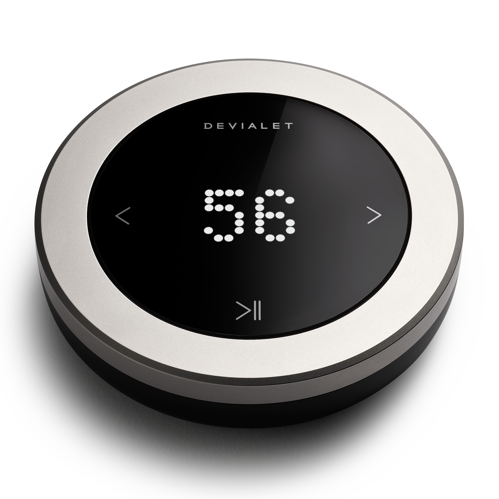
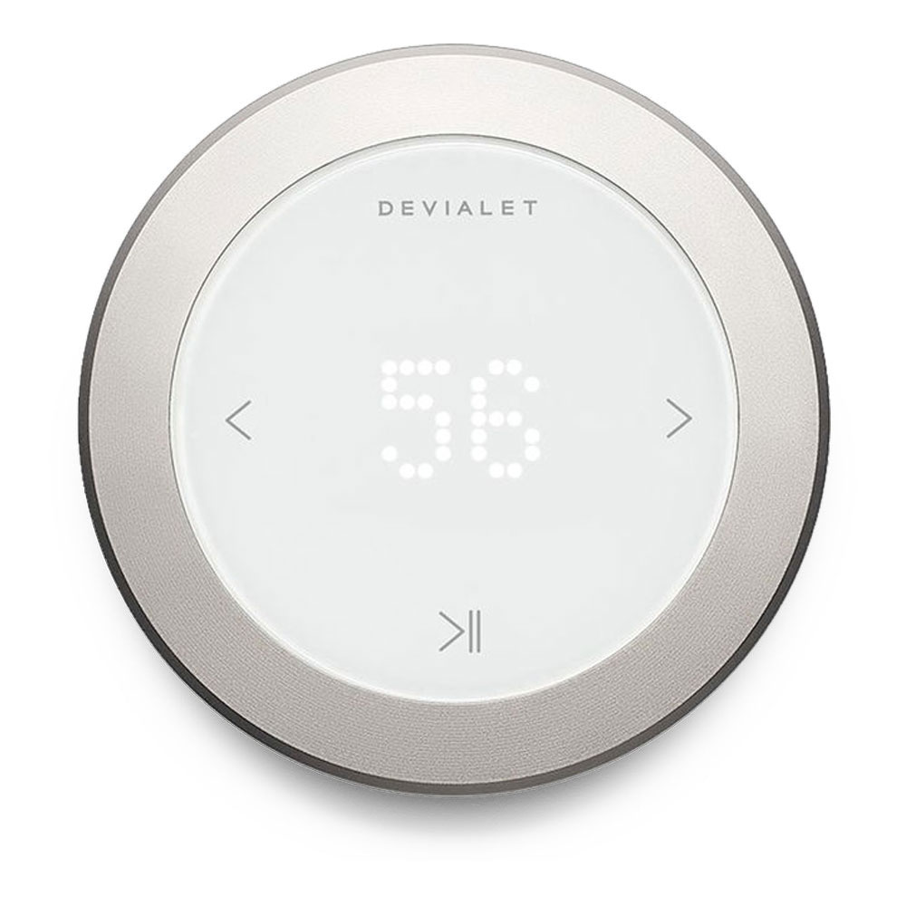

Remote, sentez la puissance de vos appareils Devialet du bout des doigts.
Ci-dessous la photo du Devialet Remote

Image 1
 Contrôle total, précision absolue.
le contrôle de votre playlist ou votre film favori à distance, avec une précision absolue. Le Devialet Remote permet de contrôler les enceintes Devialet Phantom et la barre de son Devialet Dione.
simplicité
excellence ergonomique
nouveau design épuré et minimaliste
orné de détails raffinés
prouesse de précision pour un contrôle ultime
excellence technologique
Dimension et poids
80mm * 21mm * 80mm
146g
Caractéristique spéciale réseau : Connecting to a Phantom: Via Bluetooth 5.0 BLE/2,4GHz (up to 20m range from connected device).
LA REMOTE DEVIALET ? La télécommande Devialet Remote s'appaire lorsqu'elle est placée près de l'appareil Devialet compatible (enceintes Phantom ou barre de son Devialet Dione).AVEC QUELS PRODUITS DEVIALET LA REMOTE EST-ELLE COMPATIBLE ? La télécommande Devialet Remote permet de piloter les enceintes Phantom et la barre de son Devialet Dione.EST-CE QUE MA REMOTE FERA DES MISES A JOUR ? Oui, la nouvelle Remote devra faire des mises à jour au cours du temps. Lors du téléchargement de celles-ci, l'écran de la Remote affichera une flèche orientée vers le bas.QUELLE EST LA DURÉE DE LA GARANTIE SUR MA REMOTE ? Deux ans.COMMENT RECHARGER MA REMOTE ? Avec le câble USB fourni dans la boîte.